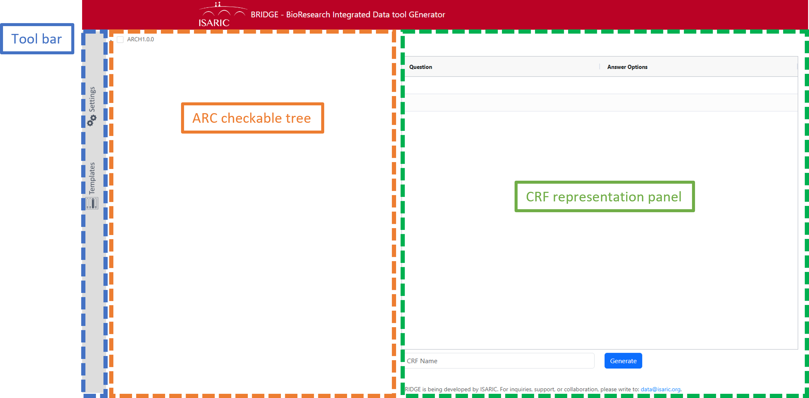
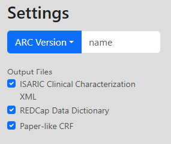
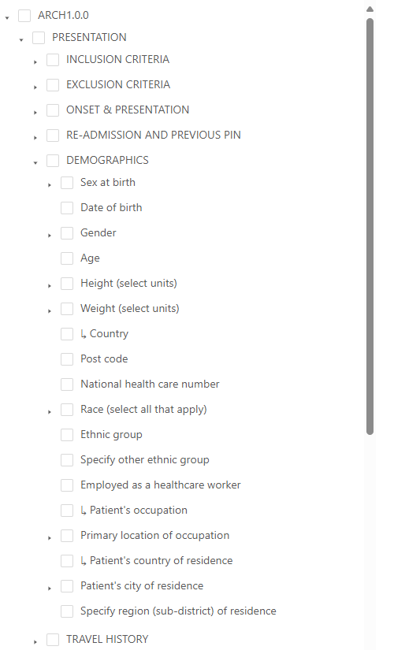
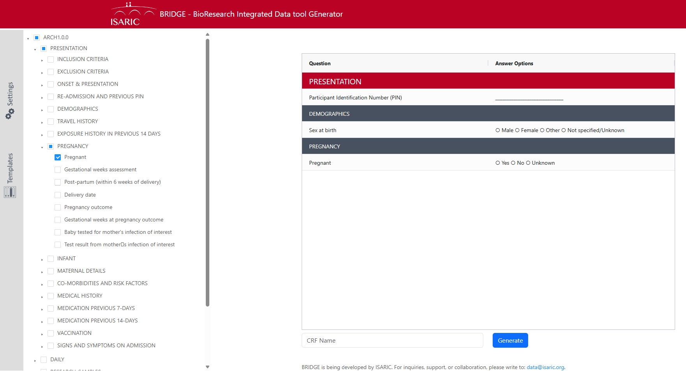
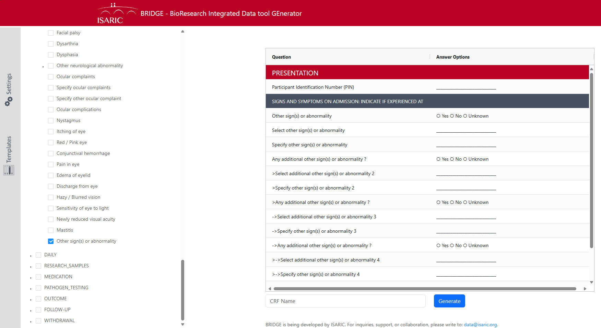
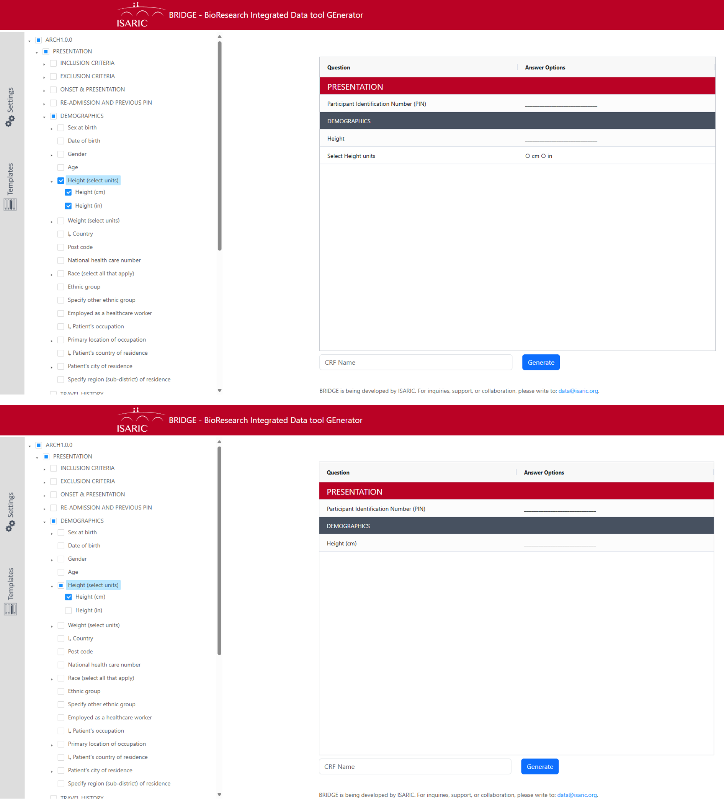
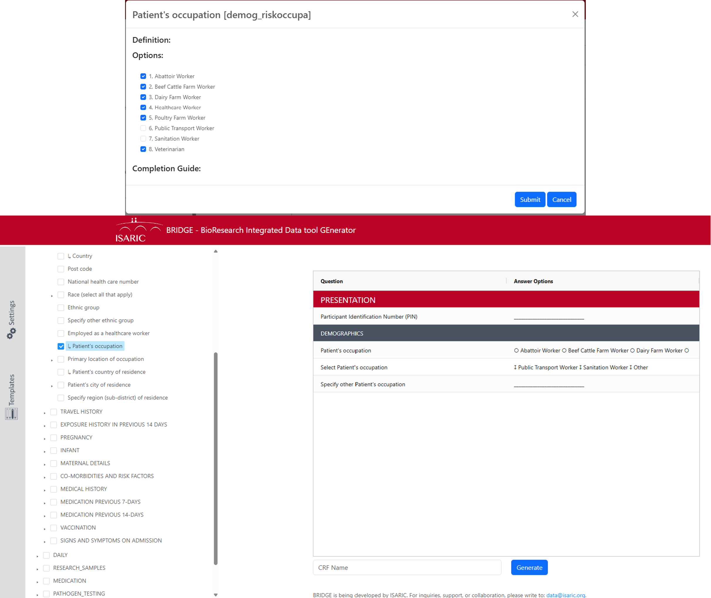
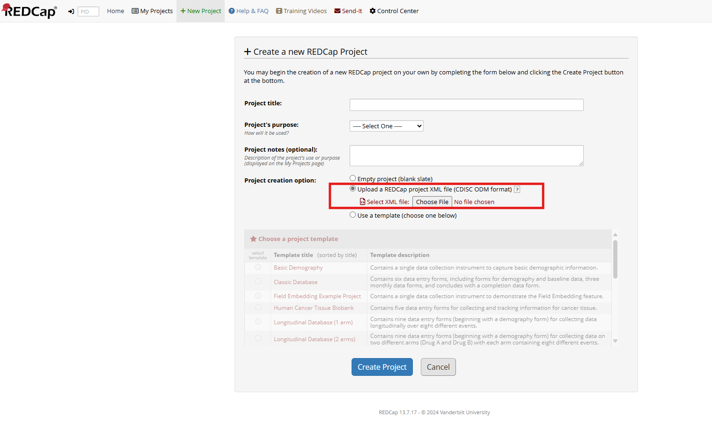
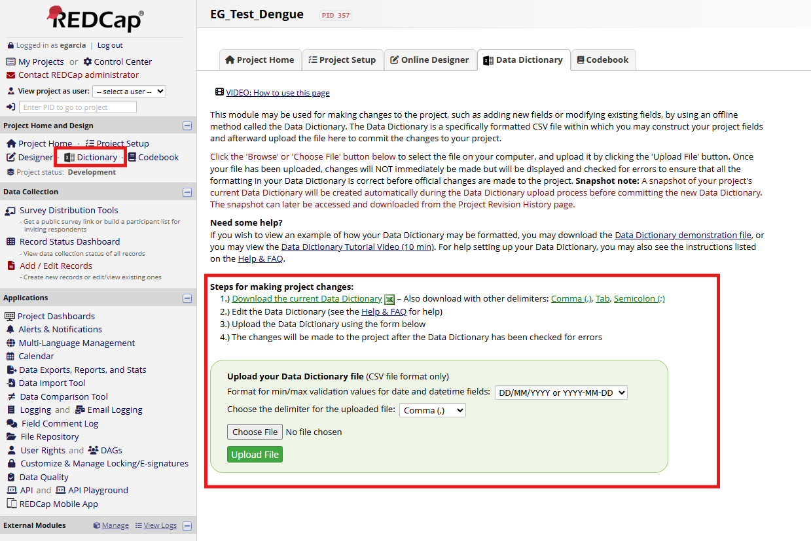
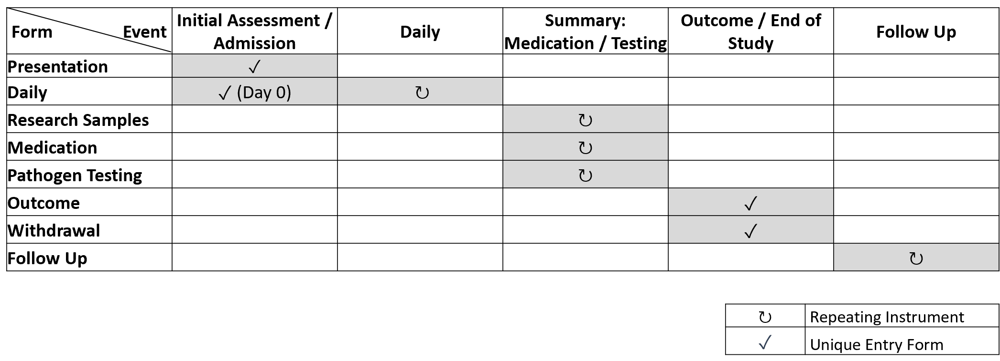

Overview
Access ISARIC BRIDGE web application here: https://isaric-bridge.replit.app
Introduction
BRIDGE is an ISARIC developed web application that assists in the creation of Clinical Report Forms (CRFs). It is based on ARC (Analysis and Research Compendium).
BRIDGE is a web-based application designed to operationalize ARC and edit any ISARIC CRF and tailor it to an outbreak's particular context. By selecting and customizing clinical questions and ensuring necessary data points for each, BRIDGE automates the creation of Case Report Forms (CRFs) for each disease and specific research context. It generates the data dictionary and XML needed to create a REDCap database for capturing data in the ARC structure. Additionally, it produces paper-like versions of the CRFs and completion guides.
Structure
BRIDGE is divided into three components:
Tool Bar
Located on the left, allows the user to enter the settings and the templates. To open each, click on the respective icon and click back when you want to return to the general view.
ARC Checkable Tree
Located in the central panel. Presents ARC as a tree structure with different levels: ARC version, forms, sections, and questions.
CRF Representation Panel
Shows how the CRF will appear when generated, including selected questions and support questions needed to be functional (automatically added by BRIDGE).

BRIDGE structure
Setup & Configuration
Settings
In the settings panel, users can select the version of ARC they want to use and the BRIDGE outcomes they want to generate:
This file can be used to generate a REDCap project. It contains the clinical characterization structure that can be uploaded to REDCap to generate a project that allows data capture in the ARC structure.
This CSV file can be used to add the specific forms and questions selected in BRIDGE to the REDCap project.
This is a PDF file that can be printed and used to collect data manually, allowing sites that cannot capture data electronically to collect information that can later be uploaded to the REDCap database.

BRIDGE Settings Panel
Templates
Templates are pre-selected groups of questions. Users can click on the Templates tab and select those they want to include in the CRF.
ISARIC templates allow users to start the CRF creation process based on a set of pre-selected questions that ISARIC has curated for a particular disease or score.
Disease Templates
Generated by the ISARIC network following the CRF creation process to ensure questions are adequate and sufficient to answer pertinent research questions.
For more information about the ISARIC creation process, please write to data@isaric.org.
Score Templates
Subsets of questions necessary to compute commonly used clinical scores, for example, the Charlson Comorbidity Index or SOFA.
If multiple templates are selected, the obtained CRF is the union of the questions from all the selected templates. Additionally, the CRF can be customized (see How to Create a CRF with BRIDGE section).

BRIDGE Tree Structure
How to
How to Create a CRF with BRIDGE
To create a CRF in BRIDGE, users need to navigate the checkable tree and select the questions they want to include in the CRF. After this is done, a representation of the questions will appear in the CRF representation panel.
Sometimes additional questions will appear because BRIDGE handles retro-inclusion of questions. For example, when the user checks the 'Pregnant' question, the 'Sex at birth' question is also added to the CRF.

BRIDGE Example - Retro-inclusion
Similarly, BRIDGE also generates and adds questions that improve electronic data collection. For example, when the user selects the question 'Other sign(s) or abnormality,' additional questions are added that promote the inclusion of up to five additional unlisted signs at presentation.

BRIDGE Example - Electronic data collection enhancement
User Defined Questions
In addition to allowing the selection of questions for a particular CRF, BRIDGE allows further question customization in the following ways:
Select Units Question
Measurement units can be selected in questions that have the text '(select units)' in the label. Users can select the units they want to include in the CRF, and BRIDGE will add the pertinent questions for this.
Example: If a user selects a single unit for a question, such as cm in 'Height,' the numeric question 'Height (cm)' will be added. If the user selects multiple units, such as cm and in, BRIDGE will generate a numeric question for 'Height' and another radio question for 'Select Height units' with the selected units.

BRIDGE Example - Selecting measurement units for a variable
User List Question
For particular questions, the options that are adequate for the disease and/or site can be selected by the user. The user needs to click the LABEL of the question with this symbol ↳ in the checkable tree. This will open a new window that allows users to select the pertinent options for such questions.
Result: This will generate a radio question with the user-selected options and the 'Other' option. It will also generate a dropdown question with the options that were not selected by the user, which corresponds to a second layer of possible options to limit free text. A third question for free text is also added and will appear in electronic capture when the 'Other' option in the second layer dropdown is selected.

BRIDGE Example - Selecting user-defined options for a variable
Multi List Question
The question with this symbol on the label ⇉ has a similar behavior to the 'User list' question, with the only difference being that the layer one options are checkboxes, not radios, allowing multiple selections.
After choosing the variables, users can generate the pertinent files. They need to enter a CRF name in the textbox below the CRF representation panel and click the generate button.
How to Use BRIDGE Generated Files
As mentioned, BRIDGE generates three files:
This XML file can be used to create a project in REDCap. Navigate to the 'Project Setup' section in REDCap, and under 'Design your data collection instruments & enable your project,' click on 'Upload Instrument Zip file' and upload the XML file generated by BRIDGE.

BRIDGE Example - Upload XML to REDCap
This CSV file can be used to update an existing REDCap project. Go to the 'Data Dictionary' section in REDCap, click 'Choose File,' and upload the CSV file generated by BRIDGE. Click 'Upload File' to apply the changes.

BRIDGE Example - Upload CSV to REDCap
This PDF file can be printed and used for manual data capture in sites that cannot collect data electronically. The collected data can later be entered into the REDCap database.
This file creates a REDCap project with the following event structure:

BRIDGE Example - REDCap event structure
Access ISARIC BRIDGE web application: https://isaric-bridge.replit.app